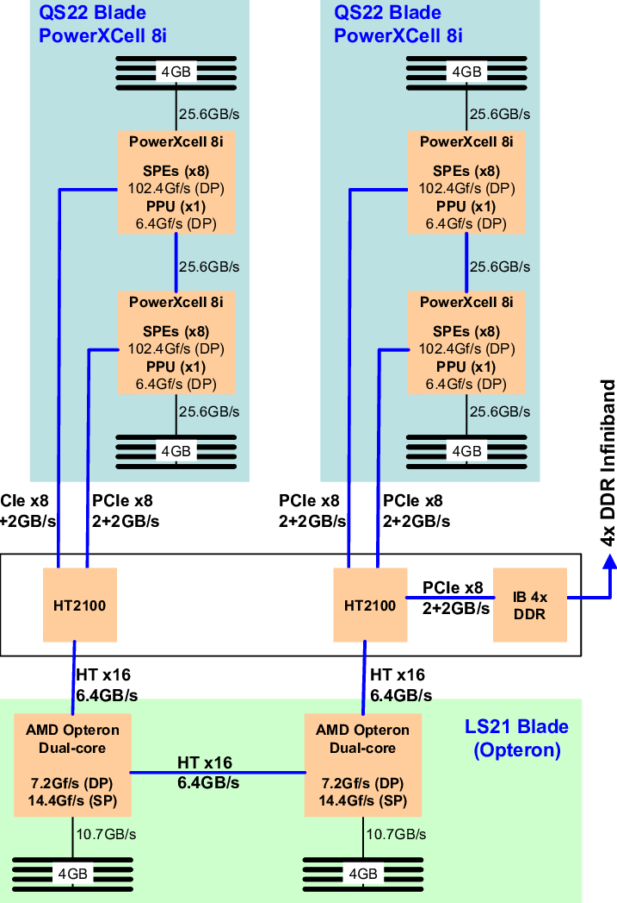
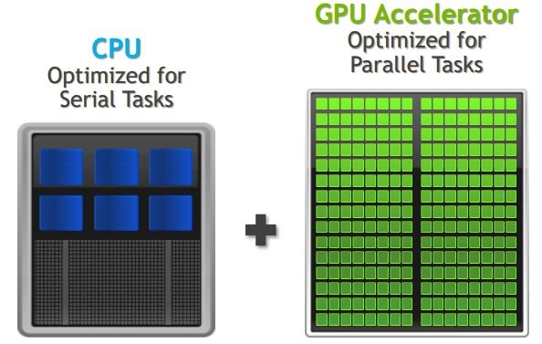
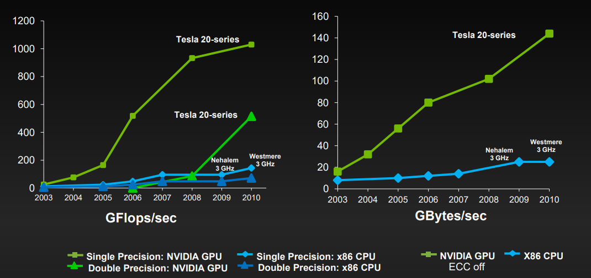
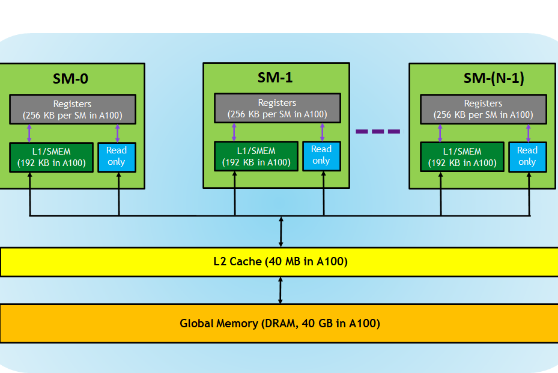
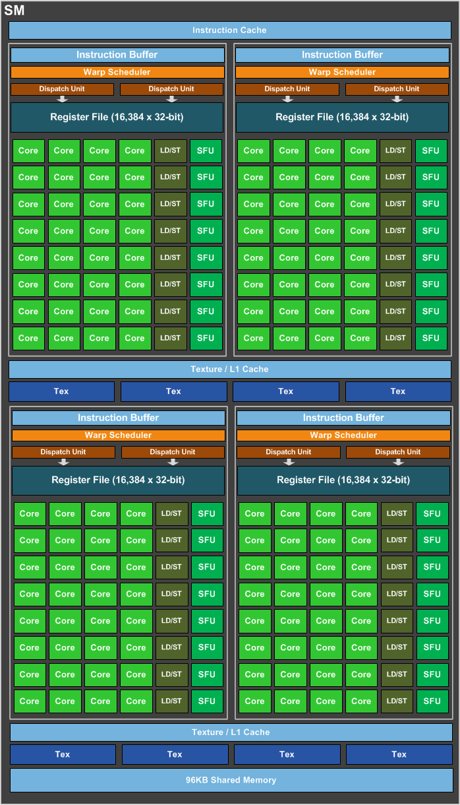
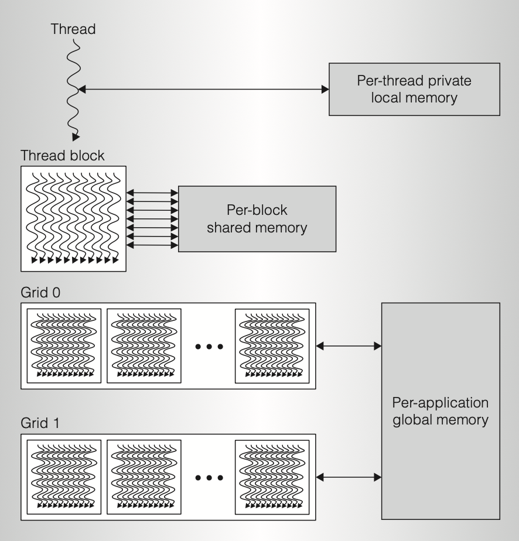
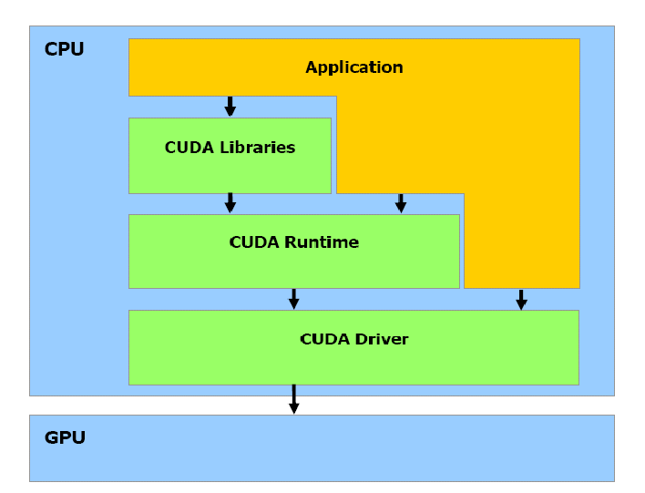
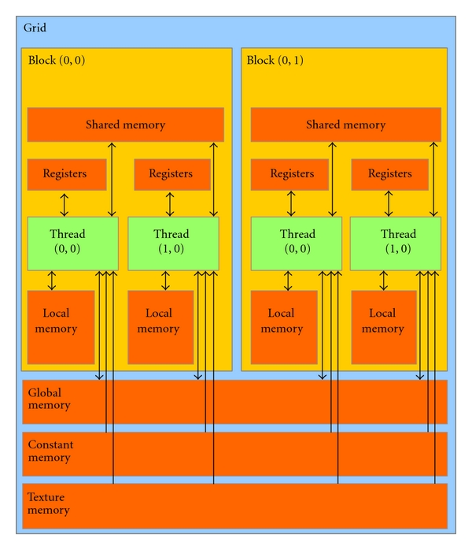

7. Accelerators
Overview
Welcome to the 7th unit of the HIPC course.
In 2008 Roadrunner became the first supercomputer to break the PetaFLOP/s barrier. Roadrunner was perhaps the first modern heterogenous system, with each node employing PowerXCell accelerators to achieve its high performance. Today, many of the largest systems in the world are heterogeneous platforms, employing GPUs to accelerate their computational workloads. This unit covers the basics of accelerators and how to program them.
Specifically, we will cover:
- Accelerators in HPC
- GPGPU platforms
- GPU models
- Programming with CUDA
After this unit, you are expected to have a better understanding of GPU and CUDA programming, and to be able to write CUDA programs.
A Brief Introduction to GPUs in HPC
An accelerator is, as the name indicates, a device to speed up certain computations in an HPC application. Accelerators are peripheral processors that are able to perform additional work in the background, while releasing the resources of the main processor.
In the June 2016 TOP500 list, 19% of state-of-the-art HPC systems used GPUs (graphics processing units) or other accelerators (e.g. FPGA-based HPC accelerators). In general, accelerators can be classified as (1) general-purpose, or (2) domain-specific. The use of accelerators involves the cooperative design of software and hardware (or SW & HW co-design), which sometimes makes porting and maintenance difficult, as the software and hardware are coupled for a specific software application and hardware platform.
Accelerated computing started to gain popularity with the release of the first Petascale system, Roadrunner, which had IBM PowerXCell 8i accelerators connected to each core.

Figure 1: Roadrunner’s architecture
In the following years, the trend rapidly moved towards the use of GPUs, due to their versatility and relatively low cost. The prevalence of GPUs as accelerators has significantly improved the programmability issue due to their general-purpose nature and well supported programming infrastructure. These GPUs that can be used for calculation are sometimes referred to as GPGPUs (General Purpose Graphic Processing Units).
In 2007, NVIDIA released its CUDA development environment, the earliest widely adopted programming model for GPU computing. Two years later, OpenCL became widely supported. The OpenCL framework allows for the development of code for both GPUs and CPUs with an emphasis on portability. Thus, GPUs became a more generalised computing device.
Despite other competitors in the market (e.g. AMD, Intel), the combination of NVIDIA GPUs and CUDA dominates several application areas, including scientific computing, deep learning, and animation rendering. NVIDIA GPUs are the foundation for some of the fastest computers in the world.
CUDA, as already mentioned, is a parallel computing platform and programming model developed by NVIDIA for general computing on its own GPUs. CUDA enables developers to speed up compute-intensive applications by harnessing the power of GPUs for the parallelisable part of the computation. In this unit, we will focus on NVIDIA GPUs and CUDA programming, but many of the concepts will apply to other GPUs and GPU programming models.
GPU vs CPU: What’s the difference?
GPUs were originally designed to accelerate the rendering of 3D graphics. During the last few decades, researchers have used GPUs to perform complex scientific computations, including fluid flow simulation using the Lattice Boltzman model, cloud dynamics simulation, finite-element simulations, and ice crystal growth, among many others.
However, an obvious question to ask is why we need to use a GPU in addition to a CPU? Well, we know a CPU is good for general-purpose computing, however, it is optimised for serial tasks. On the other hand, a GPU is optimised for parallel tasks and it is extremely powerful at running smaller (and simpler) jobs simultaneously.
Architecturally, in a GPU there are often hundreds of arithmetic logic units (ALUs). While for a CPU there are only a limited number of ALUs, usually correlated to the number of cores. This architectural difference leads to their different approaches to processing tasks, and therefore dictates which purposes they are good/bad for.

Figure 2: The key differences between CPUs and GPUs
To make it clearer, the following table lists the mains strengths of CPUs and GPUs:
| CPU strengths | GPU strengths |
| Very large main memory | High bandwidth main memory |
| Very fast clock speeds | Latency tolerant via parallelism |
| Latency optimized via large caches | Significantly more compute resources |
| Small number of threads can run very quickly | High throughput |
| High performance/watt |
The table below makes a similar comparison in terms of their weaknesses:
| CPU weaknesses | GPU weaknesses |
| Relatively low memory bandwidth | Relatively low memory capacity |
| Low performance/watt | Low per-thread performance |
Modern CPUs strongly favour sequential serial processing with high operational frequency and get a boost from the large size of caches. The range of tasks they are appropriate for is wide, as the architecture is very general-purpose. However, a CPU is not great at everything, especially in the case of highly parallelisable programs. In some cases, GPUs can be 100× or more faster than CPUs with fine-grained parallelism. This makes GPUs a great candidate for offloading workloads that CPUs are not good at.
A more direct comparison of their performance is given in the following graph, where the single- and double-precision floating-point performance (left) and memory performance (right) of NVIDIA Tesla GPUs are compared with some x86 CPUs:

Figure 3: CPU and GPU performance comparison
In 2009, the differences between CPUs and GPUs was demonstrated in the TV Show Mythbusters.
The Microarchitecture of NVIDIA GPUs
The architecture of NVIDIA GPUs has been evolving for serval years. Since 2006, NVIDIA has released a number of different GPU microarchitectures, which are: Tesla (2006), Fermi (2010), Kepler (2012), Maxwell (2014), Pascal (2016), Volta (2017), Turing (2018), Ampere (2020) and Hopper (2022).
An overview of NVIDIAs GPU architecture is given in Figure 4:

Figure 4: GPU Hardware Model – Overview (A100)
It can be seen that from the top level, a GPU is similar to a CPU with respect to the memory hierarchy. But when looking down into the low-level microarchitecture, a GPU is very different from how a CPU is organised and designed.
An NVIDIA chip consists of one or more streaming multiprocessors (SMs). Each SM has a dedicated L1 cache, and all SMs share a unified L2 cache. An SM then has 1-4 warp schedulers. Each warp scheduler has a register file and multiple execution units. The execution units may be exclusive to the warp scheduler or shared between schedulers. Execution units include CUDA cores (FP/INT), special function units (SPU), texture, and load-store units (LD/ST).
In Figure 5, we take the Pascal computing architecture (GeForce GTX 1080, Telsa P100, etc.) as an example to look inside an SM. The diagrammatic structure is shown below.

Figure 5: GPU Hardware Model – SM (of a GP104/Pascal)
As can be seen, the number of CUDA cores within an SM is huge. In a GeForce GTX 1080, there are 20 streaming multiprocessors (SM), each with 128 CUDA processor cores, for a total of 2560 cores. To efficiently manage and use this many cores, each SM uses a single-instruction, multiple-thread (SIMT) approach, where concurrent threads are created, managed, scheduled, and executed in a group of parallel threads, or warps.
We will cover these in detail in the following section.
GPU Programming with CUDA
What is CUDA?
CUDA (Compute Unified Device Architecture) is a parallel computing platform and application programming interface (API) that allows software to use certain types of the graphics processing unit (GPU) for general-purpose processing – an approach called general-purpose computing on GPUs (GPGPU). CUDA is a software layer with a C-like programming interface that gives direct access to the GPU’s virtual instruction set and parallel computational elements for the execution of compute kernels. CUDA was first released in 2007 by NVIDIA, and the vision of CUDA is not for graphics but for parallel computation. It enables GPUs to perform many parallelised floating-point computations.
CUDA Scalable Parallel Architecture
Before we move on to more details about CUDA programming, we’ll first look at the programming model of CUDA:

Figure 6: CUDA Parallel Thread Architecture
(1) Thread and Thread Block
A CUDA program comprises of a host program, consisting of one or more sequential threads running on a host, and one or more parallel kernels (a kernel acts as a function that runs on the device) suitable for execution on a parallel computing GPU. Only one kernel is executed at a time, and that kernel is executed on a set of lightweight parallel threads. For better resource allocation (i.e. to avoid redundant computation, reduce bandwidth from shared memory) threads are grouped into thread blocks. A thread block is a programming abstraction that represents a group of threads that can be executed serially or in parallel.
(2) Grid
Multiple thread blocks are grouped to form a grid. Threads from different blocks in the same grid can coordinate using atomic operations on a global memory space shared by all threads. Sequentially dependent kernel grids can synchronise through global barriers and coordinate through global shared memory. Thread blocks implement coarse-grained scalable data parallelism and provide task parallelism when executing different kernels, while lightweight threads within each thread block implement fine-grained data parallelism and provide fine-grained thread-level parallelism when executing different paths.
(3) Scheduling of CUDA thread blocks
The global work scheduler distributes CUDA thread blocks to SMs with available capacity, balancing load across a GPU, and running multiple kernel tasks in parallel if appropriate. The multithreaded SMs schedule and execute CUDA thread blocks and individual threads. Each SM can process multiple concurrent threads to hide long-latency loads from DRAM memory. Each thread block completes executing its kernel program and releases its SM resources before the work scheduler assigns a new thread block to that SM. A block is assigned to and executed on a single SM.
CUDA Software and Memory
CUDA Software Stack
CUDA is implemented and deployed in multiple software layers. It consists of:
- The CUDA hardware driver;
- The CUDA API and its runtime: The CUDA API is an extension of the C programming language that adds the ability to specify thread-level parallelism in C and also to specify GPU device-specific operations (like moving data between the CPU and the GPU);
- Mathematical libraries that have been optimised to run using CUDA.
The CUDA Toolkit SDK (software development kit) comes with the software driver, the CUDA toolkit (compiler, debugger, profiler), and code samples.

Figure 7: CUDA Software Stack
The CUDA Toolkit includes many sub-components. For example, for CUDA 11.6, the components are listed in the table below:
| Component Name | Version Information | Supported Architectures |
| CUDA C++ Core Compute Libraries | 11.6.55 | x86_64, POWER, Arm64 |
| CUDA Runtime (cudart) | 11.6.55 | x86_64, POWER, Arm64 |
| cuobjdump | 11.6.55 | x86_64, POWER, Arm64 |
| CUPTI | 11.6.55 | x86_64, POWER, Arm64 |
| CUDA cuxxfilt (demangler) | 11.6.55 | x86_64, POWER, Arm64 |
| CUDA Demo Suite | 11.6.55 | x86_64 |
| CUDA GDB | 11.6.55 | x86_64, POWER, Arm64 |
| CUDA Memcheck | 11.6.55 | x86_64, POWER |
| CUDA Nsight | 11.6.55 | x86_64, POWER |
| CUDA NVCC | 11.6.55 | x86_64, POWER, Arm64 |
| CUDA nvdisasm | 11.6.55 | x86_64, POWER, Arm64 |
| CUDA NVML Headers | 11.6.55 | x86_64, POWER, Arm64 |
| CUDA nvprof | 11.6.55 | x86_64, POWER, Arm64 |
| CUDA nvprune | 11.6.55 | x86_64, POWER, Arm64 |
| CUDA NVRTC | 11.6.55 | x86_64, POWER, Arm64 |
| CUDA NVTX | 11.6.55 | x86_64, POWER, Arm64 |
| CUDA NVVP | 11.6.58 | x86_64, POWER |
| CUDA Samples | 11.6.101 | x86_64, POWER, Arm64 |
| CUDA Compute Sanitizer API | 11.6.55 | x86_64, POWER, Arm64 |
| CUDA cuBLAS | 11.8.1.74 | x86_64, POWER, Arm64 |
| CUDA cuFFT | 10.7.0.55 | x86_64, POWER, Arm64 |
| CUDA cuFile | 1.2.0.100 | x86_64 |
| CUDA cuRAND | 10.2.9.55 | x86_64, POWER, Arm64 |
| CUDA cuSOLVER | 11.3.2.55 | x86_64, POWER, Arm64 |
| CUDA cuSPARSE | 11.7.1.55 | x86_64, POWER, Arm64 |
| CUDA NPP | 11.6.0.55 | x86_64, POWER, Arm64 |
| CUDA nvJPEG | 11.6.0.55 | x86_64, POWER, Arm64 |
| Nsight Compute | 2022.1.0.12 | x86_64, POWER, Arm64 (CLI only) |
| NVTX | 1.21018621 | x86_64, POWER, Arm64 |
| Nsight Systems | 2021.5.2.53 | x86_64, POWER, Arm64 (CLI only) |
| Nsight Visual Studio Edition (VSE) | 2022.1.0.21343 | x86_64 (Windows) |
| nvidia_fs | 2.10.3 | x86_64 |
| Visual Studio Integration | 11.6.55 | x86_64 (Windows) |
| NVIDIA Linux Driver | 510.39.01 | x86_64, POWER, Arm64 |
| NVIDIA Windows Driver | 511.23 | x86_64 (Windows) |
It is noted that the version of components differs version by version. In this unit, we will only cover a subset of these components, but if you are interested in any of them, you can find details in the CUDA Toolkit Documentation.
CUDA Memory Model
CUDAs memory model is organised as follows:

Figure 8: CUDA Memory Model
Because of the nature of data allocation in shared memory, two concurrent threads in a warp can access different words in the same bank at the same time, causing a bank conflict that makes a GPU serialise the accesses issued to this bank. Since serialisation in a GPU is undesirable and clock-cycle costly, this access pattern should be avoided.
The amount of memory that is available to the CUDA application is (in most cases) specific to the compute capability of the device. For each compute capability, the size restrictions of each type of memory (except global memory) is defined in the table below. The application programmer is encouraged to query the device properties in the application using the cudaGetDeviceProperties() method.
|
Technical Specifications
|
Compute Capability | ||||
| 1.0 | 1.1 | 1.2 | 1.3 | 2.0 | |
| Number of 32-bit registers per MP | 8 K | 16 K | 32 K | ||
| Maximum amount of shared memory per MP | 16 KB | 48 KB | |||
| Amount of local memory per thread | 16 KB | 512 KB | |||
| Constant memory size | 64 KB | ||||
The following table summarises the different memory types and the properties of those types:
| Memory | Located | Cached | Access | Scope | Lifetime |
| Register
|
cache
|
n/a
|
Host: None
Kernel: R/W |
thread
|
thread
|
| Local
|
device
|
1.x: No
2.x: Yes |
Host: None
Kernel: R/W |
thread
|
thread
|
| Shared
|
cache
|
n/a
|
Host: None
Kernel: R/W |
block
|
block
|
| Global
|
device
|
1.x: No
2.x: Yes |
Host: R/W
Kernel: R/W |
application
|
application
|
| Constant
|
device
|
Yes
|
Host: R/W
Kernel: R |
application
|
application
|
CUDA Basic Usage
CUDA Operation Procedure
The programming model of CUDA provides a SIMT (single instruction, multiple threads) model. In CUDA, the CPU and the GPU have to be worked in a pre-defined sequence. Data has to be transferred from a CPU (i.e. the host) to a GPU (i.e. the device), usually over a PCIe bus, before the computation is offloaded, and the result transferred back to the main memory. A typical sequence of operations for a CUDA C program is:
- Declare and allocate the host and device memory.
- Initialise host data.
- Transfer data from the host memory to the device memory.
- Load GPU program and execute one or more kernels. Data is cached on-chip for performance.
- Transfer results from the device to the host.
In the following part, we will cover how to use the CUDA toolkit and write CUDA-accelerated programs.
First CUDA Example
CUDA uses C-like syntax and adds its own primitives and API on top of C. To understand the difference, we’ll first look at the classic “Hello, World” example written in C and in CUDA.
First, as written in C (using a function call for the printf() for simplicity later:
#include <stdio.h>
void c_hello() {
printf("Hello, World!\n");
}
int main(int argc, char *argv[]) {
c_hello();
return 0;
}
… and now in CUDA:
#include <stdio.h>
__global__ void cuda_hello() {
printf("Hello, World! From GPU!\n");
}
int main(int argc, char *argv[]) {
cuda_hello<<<1,1>>>();
cudaDeviceSynchronize();
return 0;
}
A CUDA program has two parts: (1) host code on the CPU which interfaces with the GPU and (2) kernel code which runs on the GPU. In the CUDA version, the __global__ specifier indicates a function that runs on the device (GPU). Such a function can be called through host code, e.g. from the main() method in the example, and is also known as a “kernel”. The <<<...>>> specifies its execution configuration, and in CUDA terminology, this is called a “kernel launch”.
In its simplest format, this looks like:
kernel_routine<<<griddim, blockdim>>>(args);
where,
-
griddimis the number of instances of the kernel (the “grid” size) -
blockdimis the number of threads within each instance -
argsis a limited number of arguments, usually mainly pointers to arrays in the GPUs memory, and some constants which get copied by-value
The more general form allows griddim and blockdim to be 2D or 3D to simplify more complex configurations.
Compiling CUDA Programs
To compile a CUDA program, the nvcc compiler should be used. Just like gcc, nvcc can take parameters to, for example, change the output file name, or to include libraries. Note that the source file extension is .cu for CUDA programs. Below is a table of input file extensions/types that nvcc accepts:
| Input File Prefix | Description |
.cu |
CUDA source file, containing host code and device functions |
.c |
C source file |
.cc, .cxx, .cpp
|
C++ source file |
.ptx |
PTX intermediate assembly file (see Figure 9) |
.cubin |
CUDA device code binary file (CUBIN) for a single GPU architecture (see Figure 9) |
.fatbin |
CUDA fat binary file that may contain multiple PTX and CUBIN files (see Figure 9) |
.o, .obj
|
Object file |
.a, .lib
|
Library file |
.res |
Resource file |
.so |
Shared object file |
To compile the “hello, world” example, in a new terminal:
$ nvcc hello.cu -o hello
Once the compilation is finished, the program can be run with:
$ ./hello
CUDA compilation works as follows: the input program is preprocessed for device compilation and is compiled to a CUDA binary (cubin) and/or PTX intermediate code, which are placed in a fat binary. The input program is preprocessed once again for host compilation and is synthesised to embed the fat binary and transform CUDA specific C++ extensions into standard C++ constructs. Then, the C++ host compiler compiles the synthesised host code with the embedded fat binary into a host object. The exact steps that are followed to achieve this are displayed in the Figure 9:

Figure 9: The CUDA compilation process – from .cu to a binary
The embedded fat binary is inspected by the CUDA runtime system whenever the device code is launched by the host program to obtain an appropriate fat binary image for the current GPU.
Vectorisation with CUDA
Vect Add example
Consider the following vec_add.c example, where two vectors of size N are added together (i.e. out[i] = a[i] + b[i]):
#define N 1024*256
void vector_add(float *out, float *a, float *b, int n) {
for (int i = 0; i < n; i++) {
out[i] = a[i] + b[i];
}
}
int main(int argc, char *argv[]) {
float *a, *b, *out;
// Allocate memory
a = (float *) malloc(sizeof(float) * N);
b = (float *) malloc(sizeof(float) * N);
out = (float *) malloc(sizeof(float) * N);
// Initialize array
for (int i = 0; i < N; i++) {
a[i] = 1.0f;
b[i] = 2.0f;
}
// Main function
vector_add(out, a, b, N);
}
To vectorise this operation in CUDA, we first need to allocate memory on the GPU. This is because host and device memory are separate entities, and to run programs on the device, we need the memory to be allocated on the device. CUDA provides some memory management functions that are similar to C equivalents. The most important ones are:
cudaMalloc(void **devPtr, size_t size); // equivalent to malloc()
cudaFree(void *devPtr); // equivalent to free()
cudaMemcpy(void *dst, const void *src,
size_t count, enum cudaMemcpyKind kind) // equivalent to memcpy()
For the memory copy function, depending on where the source and target data are, there are different values for the kind argument. A full list is given below:
kind |
Source and Destination |
cudaMemcpyHostToHost |
Host → Host |
cudaMemcpyHostToDevice |
Host → Device |
cudaMemcpyDeviceToHost |
Device → Host |
cudaMemcpyDeviceToDevice |
Device → Device |
cudaMemcpyDefault |
Default based unified virtual address space |
We can now write a kernel function with the decorator __global__ to indicate that this is a device program:
__global__ void vector_add(float *out, float *a, float *b, int n) {
for (int i = 0; i < n; i++) {
out[i] = a[i] + b[i];
}
}
And then in the main() function, call the vector_add() kernel:
void main(int argc, char *argv[]) {
float *a, *b, *out;
float *d_a, *d_b, *d_out;
// Allocate host memory for a
a = (float *) malloc(sizeof(float) * N);
b = (float *) malloc(sizeof(float) * N);
...
// Allocate device memory for a
cudaMalloc((void **) &d_a, sizeof(float) * N);
cudaMalloc((void **) &d_b, sizeof(float) * N);
// Transfer data from host to device memory
cudaMemcpy(d_a, a, sizeof(float) * N, cudaMemcpyHostToDevice);
cudaMemcpy(d_b, b, sizeof(float) * N, cudaMemcpyHostToDevice);
vector_add<<<1,1>>>(d_out, d_a, d_b, N);
...
// Cleanup after kernel execution
cudaFree(d_a);
cudaFree(d_b);
free(a);
free(b);
}
Note some irrelevant code is omitted, for example, the initialisation of a and b.
Profiling Performance
NVIDIA provide a command-line profiler tool called nvprof, which gives more insight in the performance of CUDA applications. To profile our vector addition, use the following command:
$ nvprof ./vec_add
==6326== Profiling application: ./vec_add
==6326== Profiling result:
Time(%) Time Calls Avg Min Max Name
97.55% 1.42529s 1 1.42529s 1.42529s 1.42529s vector_add(float*, float*, float*, int)
1.39% 20.318ms 2 10.159ms 10.126ms 10.192ms [CUDA memcpy HtoD]
1.06% 15.549ms 1 15.549ms 15.549ms 15.549ms [CUDA memcpy DtoH]
To get a more detailed trace, you could use the --print-gpu-trace flag.
Kernel Execution Configuration
Note that so far, we have not exploited the full power of a GPU as we have only used <<1,1>> as the kernel execution configuration, which means we have only used one GPU thread. CUDA organises threads into a group called a thread block. Kernels can launch multiple thread blocks, organised into a grid structure. This is specified by the kernel execution configuration.
The general syntax of kernel execution configuration is <<M, T>>, where M is the grid number (i.e. number of thread blocks), and T is the number of parallel threads within each thread block (i.e. block size). Unlike OpenMP where the workload can be automatically assigned, CUDA does require some thought over how the workload is distributed (and thus how the data is manipulated) for each grid/thread. To do this, CUDA provides 5 built-in variables:
-
gridDimdenotes the dimension of the grid, andblockDimdenotes the dimension of a block; their types aredim3; -
blockIdxandthreadIdxidentify the block index within the grid and thread index within the block respectively, and their types areuint3; -
warpSizeis an integer type, and identifies the warp size in threads, and it should be 32 for all compute capabilities.
To give it a try, we can change the configuration of the vector_add from <<1,1>> to <<1,256>>, i.e., one block with 256 threads:
vector_add<<<1, 256>>>(d_out, d_a, d_b, N);
In the kernel function, we let the k-th thread handle the computation of k, k+stride, k+stride*2, etc. The stride is 256 as we set T to 256. In this case, the 0th thread handles 0, 256, 512; the 1st thread handles 1, 257, 513; the 2nd thread handles 2, 258, 514, etc.
__global__ void vector_add(float *out, float *a, float *b, int n) {
int index = threadIdx.x;
int stride = blockDim.x;
for(int i = index; i < n; i += stride){
out[i] = a[i] + b[i];
}
}
Similarly, we can also change the grid size M. With 256 threads per thread block, we need at least N/256 thread blocks to have a total of N threads. To assign a thread to a specific element, we need to know a unique index for each thread. Such an index can be computed as follow:
int tid = blockIdx.x * blockDim.x + threadIdx.x;
Finally, we can put everything together, like so,
#include <stdio.h>
#include <stdlib.h>
#include <math.h>
#include <assert.h>
#include <cuda.h>
#include <cuda_runtime.h>
#define N 1024*256
#define MAX_ERR 1e-6
__global__ void vector_add(float *out, float *a, float *b, int n) {
int tid = blockIdx.x * blockDim.x + threadIdx.x;
// Handling arbitrary vector size
if (tid < n) {
out[tid] = a[tid] + b[tid];
}
}
int main(int argc, char *argv[]) {
float *a, *b, *out;
float *d_a, *d_b, *d_out;
// Allocate host memory
a = (float *) malloc(sizeof(float) * N);
b = (float *) malloc(sizeof(float) * N);
out = (float *) malloc(sizeof(float) * N);
// Initialize host arrays
for (int i = 0; i < N; i++) {
a[i] = 1.0f;
b[i] = 2.0f;
}
// Allocate device memory
cudaMalloc((void **) &d_a, sizeof(float) * N);
cudaMalloc((void **) &d_b, sizeof(float) * N);
cudaMalloc((void **) &d_out, sizeof(float) * N);
// Transfer data from host to device memory
cudaMemcpy(d_a, a, sizeof(float) * N, cudaMemcpyHostToDevice);
cudaMemcpy(d_b, b, sizeof(float) * N, cudaMemcpyHostToDevice);
// Executing kernel
int block_size = 256;
int grid_size = N / block_size;
vector_add<<<grid_size,block_size>>>(d_out, d_a, d_b, N);
// Transfer data back to host memory
cudaMemcpy(out, d_out, sizeof(float) * N, cudaMemcpyDeviceToHost);
// Verification
for (int i = 0; i < N; i++) {
assert(fabs(out[i] - a[i] - b[i]) < MAX_ERR);
}
printf("PASSED\n");
// Deallocate device memory
cudaFree(d_a);
cudaFree(d_b);
cudaFree(d_out);
// Deallocate host memory
free(a);
free(b);
free(out);
}
Exercise
Can you do a performance comparison of
vec_addwith<<1,1>>,<<1,256>>and<<1024,256>>? How much speed-up can you get?
Advanced CUDA
Kernel with 2D Indexing
The kernel configuration can be 2-dimensional (as well as 3-dimensional). To access the second dimension, use the .y attribute (and .z for indexing the third dimension).
For example,
__global__ void kernel(int *a, int dimx, int dimy) {
int ix = blockIdx.x * blockDim.x + threadIdx.x;
int iy = blockIdx.y * blockDim.y + threadIdx.y;
int idx = iy * dimx + ix;
a[idx] = a[idx] + 1;
}
and in your main:
dim3 grid, block;
block.x = 4;
block.y = 4;
grid.x = dimx / block.x;
grid.y = dimy / block.y;
kernel<<<grid, block>>>(d_a, dimx, dimy);
Unified Memory
From Compute Capability 3.0+ and CUDA 6.0+:
- Unified Memory creates a pool of managed memory that is shared between the CPU and GPU and accessible to both using a single pointer.
- The system automatically migrates data allocated in Unified Memory between host and device.
You can allocate unified memory using the cudaMallocManaged() function. For example,
int main(int argc, char *argv[]) {
float *data;
cudaMallocManaged(&data, dataSize * sizeOf(float));
...
cudaFree(data);
...
}
Tips for Performance Considerations
In this unit we have still only scratched the surface of CUDA. There are a lot of implementation details that heavily influence how well CUDA programs run on a GPU. To improve the performance, below are some tips to get you started:
- Kernel Launch Configuration:
- Launch enough threads per SM to hide latency
- Launch enough thread blocks to load the GPU
- Global memory:
- Maximise throughput (the GPU has lots of bandwidth, use it effectively)
- Use shared memory when applicable (over 1 TB/s bandwidth)
- GPU-CPU interaction:
- Minimise CPU/GPU idling, maximise PCIe throughput
- Use analysis/profiling when optimising
GPUs typically provide cheap FLOP/s; but in order to make the most effective use of a GPU, the effort required may not be cheap.
Recommended Reading
- CUDA C++ Programming Guide, NVIDIA.
- CUDA C++ Programming Guide (pdf version), NVIDIA.
- NVIDIA’s Fermi: The First Complete GPU Computing Architecture, NVIDIA.
- An Introduction to CUDA, Mike Giles, Oxford University.
- Learn CUDA - CUDA Tutorials, Tutorials Point.
- GPU programming in CUDA: How to write efficient CUDA programs